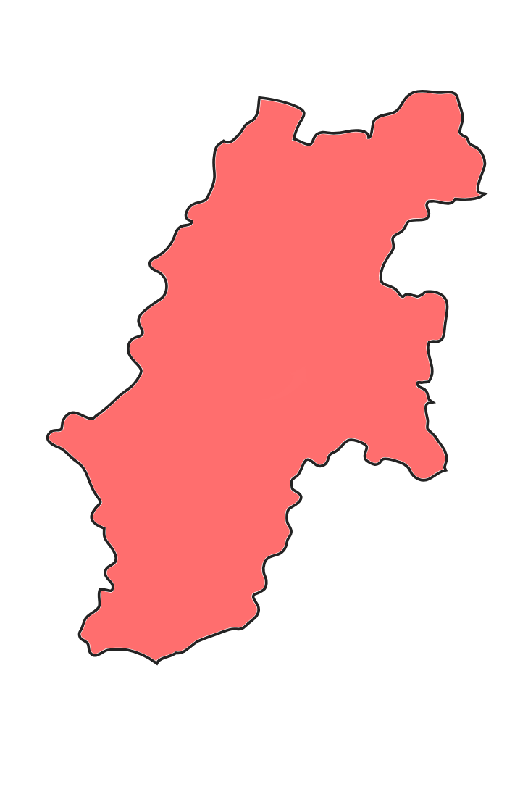
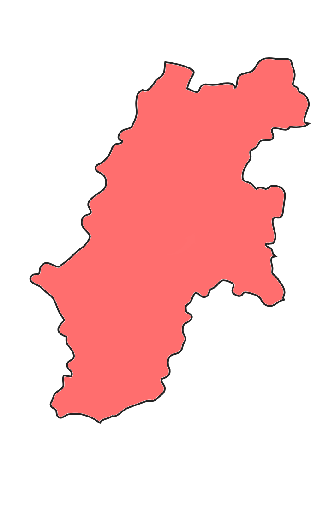
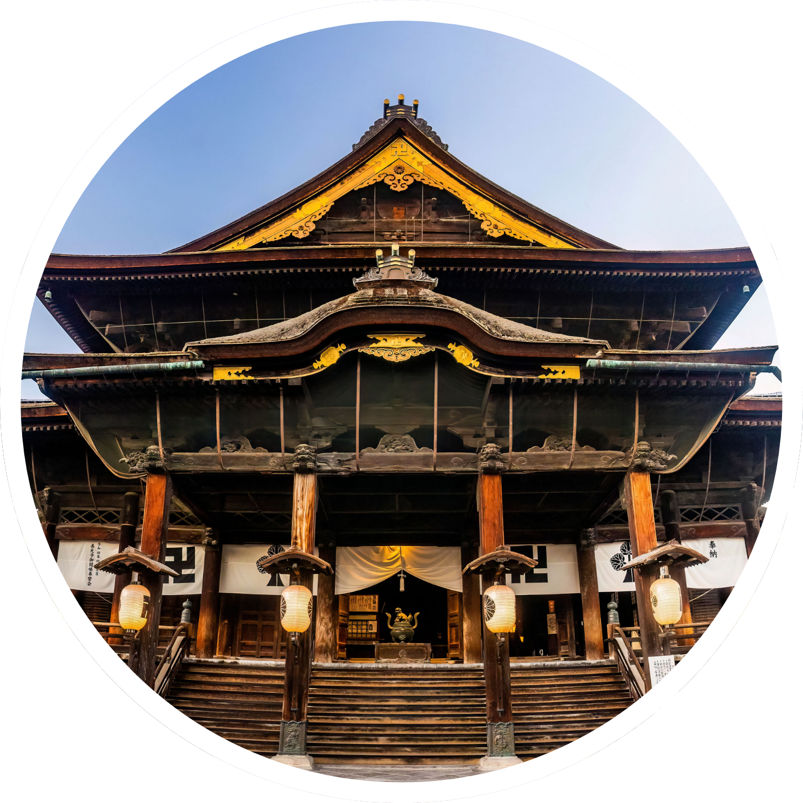
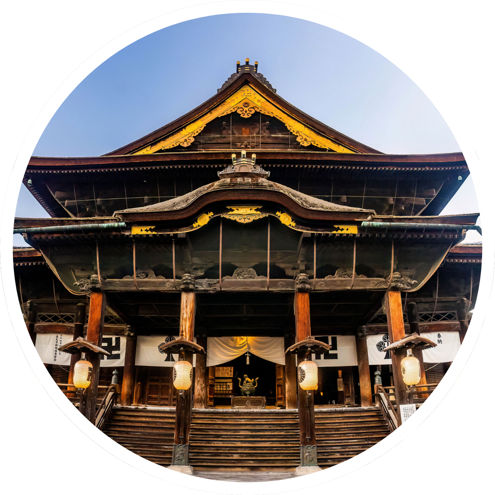

四季が彩る、日本の屋根・長野
本州の中央部に位置する長野県。日本アルプスを擁し、美しい山々に囲まれた自然豊かな地域です。夏は涼しい高原での避暑、冬は世界有数のスキーリゾートが楽しめるなど、四季折々の魅力が詰まっています。また、江戸時代から続く善光寺や、歴史ある松本城などの名所も多く、日本の伝統文化が息づく場所です。さらに、信州そばやりんご、野沢菜漬けなどの郷土料理も豊富で、食の魅力も満載。壮大な自然と歴史、文化、グルメが融合する長野県は、訪れる人々を魅了し続けています。

ロード中...

.png)


本州の中央部に位置する長野県。日本アルプスを擁し、美しい山々に囲まれた自然豊かな地域です。夏は涼しい高原での避暑、冬は世界有数のスキーリゾートが楽しめるなど、四季折々の魅力が詰まっています。また、江戸時代から続く善光寺や、歴史ある松本城などの名所も多く、日本の伝統文化が息づく場所です。さらに、信州そばやりんご、野沢菜漬けなどの郷土料理も豊富で、食の魅力も満載。壮大な自然と歴史、文化、グルメが融合する長野県は、訪れる人々を魅了し続けています。



 

.png)
松本市は長野県の中部に位置しており、自然と歴史が豊かに融合した魅力的な都市です。特に松本城はその美しい外観で有名で、観光地としても人気です。市内には温泉や美術館も多く、四季折々の自然が訪れる人々を魅了します。文化的なイベントや地元の食文化も楽しめる場所で、歴史的な街並みを歩きながら、伝統と現代が調和した雰囲気を感じることができます。
上田市は長野県の東部に位置し、戦国武将・真田幸村ゆかりの地として知られています。佐久市は自然と農業が豊かに広がるエリアで、清らかな水で育った「佐久鯉」や美しい星空が特徴的です。軽井沢は日本を代表する高原リゾート地で、四季折々の美しい自然と洗練された街並みが特徴です。旧軽井沢銀座やアウトレットモールでのショッピング、白糸の滝や雲場池などの自然散策も楽しめ、訪れる人々を魅了します。
長野市は長野県の県庁所在地であり、善光寺をはじめとする歴史的な名所が多く、全国から参拝客が訪れる街です。戸隠エリアでは戸隠そばや神秘的な戸隠神社、冬にはスキーなど四季折々の楽しみ方ができます。飯山市は「雪国の小京都」とも呼ばれ、伝統的な街並みと豊かな自然が魅力のエリアです。冬には日本有数の豪雪地帯として知られ、スキーやスノーボードを楽しむ人々で賑わいます。
諏訪市は諏訪湖を囲む温泉地として知られ、四季折々の風景が楽しめる観光地です。諏訪大社は日本最古の神社の一つとして歴史が深く、七年に一度開催される「御柱祭」は全国的にも有名です。また、湖畔から望む美しい夕景や、冬の「御神渡り」といった自然現象も見どころです。飯田市は美しい山々に囲まれた自然豊かな地域で、「日本一の星空」とも称される阿智村のナイトツアーが人気です。
上高地（かみこうち）は、日本を代表する自然の楽園のひとつです。北アルプスの雄大な山々に囲まれ、澄み切った空気と手つかずの美しい自然が広がる大正地は、多くの登山者や観光客を魅了しています。上高地のシンボルともいえる大正池は、大正時代の焼岳の噴火によってできた池で、水面に映る山々の景色が幻想的な雰囲気を演出します。
松本城は、長野県松本市にある日本最古の五重六階の天守を持つ城で、国宝 に指定されている名城のひとつです。戦国時代の終わり頃に築かれたこの城は、黒と白のコントラストが美しい外観を持ち、「烏城（からすじょう）」の愛称でも親しまれています。最大の特徴は、その美しい天守閣と、堀に映る壮麗な姿です。
美ヶ原（うつくしがはら）は、長野県の中央部に広がる標高約2,000メートルの高原で、日本百名山のひとつにも数えられる絶景スポットです。その名の通り、四季折々の美しい景観が楽しめることから「美しの原」とも呼ばれ、広大な草原と大パノラマの眺望が訪れる人々を魅了します。美ヶ原の最大の魅力は、その360度の大パノラマです。
軽井沢高原教会 は、長野県軽井沢町にある 自然と調和した美しい教会 で、四季折々の景観が楽しめる人気の観光スポットです。木々に囲まれた静かな環境の中に建つ教会は、結婚式場としても人気が高く、多くのカップルが誓いを交わす場所として訪れます。特に冬の「軽井沢高原教会 クリスマスキャンドルナイト」では、無数のキャンドルが灯され、幻想的な雰囲気に包まれます。
白糸の滝 は、長野県軽井沢町にある美しい滝で、高さ3m・幅約70mの半円状に広がる湧水の滝 です。一般的な滝のように川の水が落ちるのではなく、地下水が岩肌から無数の細い糸のように流れ落ちることが特徴で、その繊細で幻想的な景観から「白糸の滝」と名付けられました。軽井沢の自然に溶け込んだこの滝は、特に新緑の春や紅葉の秋に美しい風景を楽しめるスポットです。
上田城（上田城跡公園） は、長野県上田市にある戦国時代の名城で、真田昌幸が築城し、徳川軍を二度も撃退した難攻不落の城 として有名です。城は千曲川沿いの自然の地形を活かした造りになっており、現在は「上田城跡公園」として整備され、多くの観光客が訪れます。現在、城の本丸は残っていませんが、東虎口櫓門や堀、石垣 などが現存し、当時の雰囲気を感じることができます。
御釈迦池（みしゃかいけ） は、長野県長野市の戸隠エリアにある 標高約1,200mの高地に位置する神秘的な池です。周囲を森に囲まれ、四季折々の美しい風景を楽しむことができます。池の名前の由来は、かつてこの地に お釈迦様の姿が映し出された という伝説によるもの。静寂に包まれた湖面は、晴れた日には周囲の木々や空を鏡のように映し出し、幻想的な雰囲気を醸し出します。
地獄谷（地獄谷温泉・地獄谷野猿公苑）は、長野県山ノ内町に位置し、標高約850mにある 険しい渓谷と温泉が広がる自然豊かなエリア です。地獄谷という名前の由来は、周囲に噴気が立ち込め、まるで地獄のような風景に見えたことにあります。この地域で最も有名なのが「地獄谷野猿公苑」で、ここでは世界で唯一、温泉に入る野生のニホンザル（スノーモンキー）を観察することができます。
戸隠神社 は、長野市の北西部に位置し、約2000年の歴史を持つ 神話と信仰の聖地 です。創建の由来は、日本神話に登場する 天岩戸伝説 に関連しており、天照大神が隠れた岩戸が戸隠の地に飛来し、神々が祀られたとされています。神社は 奥社・中社・宝光社・九頭龍社・火之御子社 の五社からなり、それぞれ異なるご利益があるとされています。特に 奥社への参道は樹齢400年を超える杉並木に囲まれ、神秘的な雰囲気が漂います。
高ボッチ高原は、長野県塩尻市に位置する標高約1,600mの高原で、360度の大パノラマが広がる絶景スポットです。特に有名なのは、諏訪湖越しに富士山を望む壮大な景色で、天候に恵まれれば、南アルプスや八ヶ岳、北アルプスの山々も一望できます。また、雲海スポットとしても人気があり、早朝には幻想的な風景が広がることも。夜には、満天の星空と諏訪湖の夜景が美しく、天体観測や夜景撮影を楽しむ人々が訪れます。
諏訪大社 は、長野県諏訪地方にある 日本最古級の神社の一つ で、全国に約25,000社ある諏訪神社の総本社です。諏訪湖の周辺に 上社（本宮・前宮）と下社（秋宮・春宮） の 4つの社 が点在し、古くから信仰を集めてきました。主祭神は 建御名方神（たけみなかたのかみ） で、狩猟や農耕、風、武勇の神として崇められています。
下栗の里 は、長野県飯田市の南アルプス山麓に位置する 「日本のチロル」とも称される絶景の里山 です。標高約1,000m～1,200mの急斜面に広がる集落で、まるで空に浮かぶような美しい風景が広がります。この地域は、山の斜面に張り付くように家々が建ち、最大傾斜38度 の土地で農業が行われています。主にジャガイモやソバの栽培が盛んで、素朴な田舎の風景が今も色濃く残っています。
.png)
中町通り（なかまちどおり）は、江戸時代から続く歴史的な町並みが残る風情ある通りで、「蔵の街」として知られています。白と黒のなまこ壁が特徴的な建物が立ち並び、城下町の雰囲気を色濃く感じられるエリアです。松本城から徒歩圏内にあり、観光や散策にぴったりのスポットとなっています。
詳しく見る木曽漆器館は、国の重要有形民俗文化財・木曽漆器の博物館です。木曽漆器の製作用具や人間国宝の作品、漆製の長野冬季オリンピック入賞メダルなど、木曽漆器の産地ならではの資料・作品を展示しています。そんな木曽漆器館の友の会「漆ゆう会」では、漆箸に絵付けを施すものづくり体験を開催中です。
詳しく見る.png)
NORTHSTAR outdoor adventures（ノーススター・アウトドア・アドベンチャー）は、スノーシューを履いてトレッキングツアーを開催しています。乗鞍高原の壮大なロケーションの中、じっくりウォーキングを楽しみましょう。スノーシューはスキー板よりも歩きやすく、初心者も体験しやすいアクティビティです。
詳しく見る.png)
軽井沢・プリンスショッピングプラザ は、日本有数のリゾート型アウトレットモールで、軽井沢駅から徒歩圏内に位置する人気のショッピングスポットです。広大な敷地内には、国内外のブランドショップやアウトドア用品、雑貨、食品など多彩な店舗が並び、ショッピングを満喫できます。
詳しく見る.png)
信州ハム軽井沢工房 は、軽井沢にある ハム・ソーセージの老舗「信州ハム」直営の体験施設 で、本格的な手作りウインナー作りを楽しめる人気スポットです。体験では、自分で腸詰めを行い、ひねりを加えてソーセージの形に仕上げる工程を体験できます。出来上がったウインナーはその場で茹でて試食でき、自分で作った出来たての味は格別！また、お土産用に持ち帰ることもできます。
詳しく見る.png)
軽井沢銀座通り は、軽井沢を代表する人気観光スポットのひとつで、旧軽井沢エリアに位置する歴史あるショッピングストリートです。明治時代に外国人避暑客の別荘文化とともに発展したエリア で、現在もそのレトロでおしゃれな雰囲気を残しています。通りには、老舗のパン屋やカフェ、スイーツ店、雑貨屋、アンティークショップなど個性的なお店が並び、ショッピングやグルメを楽しむのにぴったり。
詳しく見る白馬スキー場（白馬エリア）は、長野県北部に位置し、日本屈指のスノーリゾートとして知られるスキーエリアです。1998年の長野冬季オリンピックの会場にもなったこのエリアは、標高の高い山々と豊富な積雪量を誇り、国内外のスキーヤー・スノーボーダーに人気があります。初心者から上級者まで幅広いレベルに対応し、ふわふわのパウダースノーと雄大な山々の絶景が魅力です。
詳しく見る.png)
長野市の飯綱高原に位置し、長野市中心部や善光寺から車で約25分とアクセス良好です。大座法師池の上空を滑る全長150m以上のジップスライドが4本あり、爽快感抜群の体験ができます。2023年6月にはキャノピーコースがリニューアルオープンし、身長110cmから参加可能となりました。周辺にはキャンプ場や温泉施設も充実しており、家族連れやグループで1日中楽しめるスポットです。
詳しく見る.png)
飯山市の斑尾高原には、全11本のジップラインコースが設けられており、約2時間のツアーでそのうち6本を体験できます。 各コースは、スリル満点の高さや美しい景観を楽しめるものなど、多彩なバリエーションが揃っています。 ツアーはガイドが同行し、最大10名程度のグループで進行されるため、初めての方やお子様連れでも安心して参加できます。
詳しく見るカヤック体験は、四季折々の美しい風景が広がる諏訪湖を舞台に、初心者から上級者まで楽しめる安全かつ魅力的なアクティビティです。体験前には専門のインストラクターによる事前説明や安全指導が行われ、レンタル設備も充実しているため、初めての方でも安心してカヤック操作を学ぶことができます。カヤックに乗って湖上を進むと、静かな水面に映る山々や水鳥、野生生物など、自然との一体感を存分に味わうことができ、心身ともにリフレッシュできる点が大きな魅力です。
詳しく見る.png)
SUWAガラスの里では、伝統の技術と現代的なデザインが融合したガラス製品の製作や展示が行われており、来訪者は工房見学やガラス吹き体験を通して、ガラスが形作られていく過程やその美しさを実際に感じることができます。また、季節ごとに様々なイベントやワークショップが開催され、家族連れや観光客、アート愛好家など幅広い層に支持されています。
詳しく見る.png)
天竜川和船下りは、伝統の和船に乗り、歴史と自然が調和する天竜川の美しい風景をゆったりと楽しむことができるアクティビティです。和船は、古来から伝わる技術と趣を感じさせる伝統工芸品であり、その独特な造りが現代でも息づいています。体験中は、川沿いの緑豊かな景色や歴史的な背景に触れながら、のんびりと船を進めることで、本の伝統文化を肌で感じる貴重なひとときを過ごすことができます。
詳しく見る